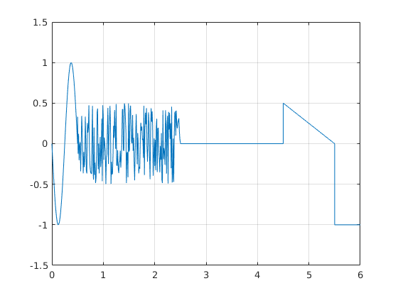

3.laboratorijas darbs
Contents
Gabalveida signaala montaaza
Dots sekojosais grafiks
Pildiju so uzdevumu, jo "Individualie_uzdevumi_katram_studentiam2020.pdf" failaa nav induviduala uzdevuma uz mana vaarda
function y = lab3_done(t)
if nargin == 0 t = 0:0.01:6; end t_sin=0:0.01:0.5; t_noise = 0.5:0.01:2.5; t_const = 2.5:0.01:4.5; t_saw = 4.5:0.01:5.5; t_const2 = 5.5:0.01:6;
Sinusoiida
A0=0; A=1; T = (4.5-1.5)/-3; f =2/T; delay=1.5; y_sin=A0+A*sin(2*pi*f*(t_sin-delay)); %plot(t_sin,y_sin)%% Grafika formateesana %hold on
Troksna signaals
y_noise = 1*rand(size(t_noise))-0.5;
%plot(t_noise,y_noise)
Konstantes signaals
y_const = zeros(size(t_const))+0;
%plot(t_const,y_const)
Liniaari mainiiga funkcija
k = (0.5-0)/(0-1);
delay = 5.5;
y_saw = k*(t_saw-delay);
%plot(t_saw,y_saw)
Konstantes signaals 2
y_const2 = zeros(size(t_const2))-1;
%plot(t_const2,y_const2)
Apvienosim visu vienaa vektoraa un grafika formateesana
t = [t_sin, t_noise, t_const, t_saw, t_const2]; y = [y_sin, y_noise, y_const, y_saw, y_const2]; if nargout == 0 plot(t,y); y = []; end grid axis([0 6 -1.5 1.5])
ans =
[]
 Secinaajumi
Sii darbaa es iepazinos ar gabalveida signaala montaazu. Kaa dazaadus grafikus apvienot vienaa signaalaa, kaa formateet tos un kaa uztaisiit funkciju.